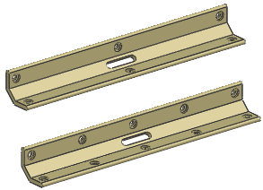

Estimated time to complete: 20–30 minutes
In this project, you will:
Position a feature using expressions.
Capture the design intent of an array of holes using expressions.

Launch the Edit the features of a slider bar activity.